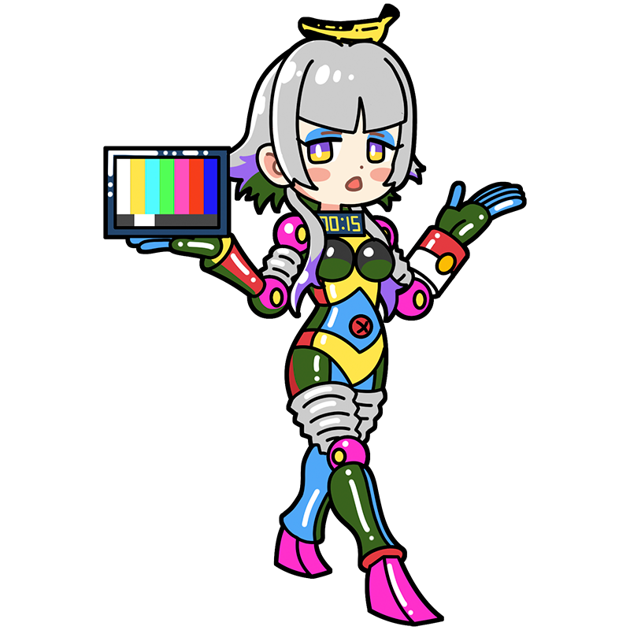

Beep, beep. Bzzzt, bzzzt. Commencing mass production now.
Warhol
Kitsch Is Priceless
Everyone Gets Fifteen Minutes of Fame
A muse embodying 20th-century American Pop Art. She spends her days in the “Factory,” creating strange and mysterious works. True to her cheap robot design, a single banana is apparently all the fuel she needs.
Style
Hometown
United States of America
Classics
- "Campbell's Soup Cans"
- "Marilyn Monroe"
- "Mao Zedong" etc.
This is the Warhol piece!
Campbell's Soup Cans
A work consisting of Campbell’s Soup cans arranged across the entire piece. Campbell’s Soup is a widely popular food product in the United States, found on supermarket shelves everywhere. By deliberately displaying a familiar everyday product as art, Warhol challenged the very notion of what art should be. It is widely regarded as one of the defining works of Pop Art.
Year
1962
Medium
Synthetic polymer paint and silkscreen ink on canvas
Dimension
246 cm x 414 cm
Collection
Museum of Modern Art, New York
（USA)
Who is Warhol?
Andy Warhol
A leading American artist of 20th-century Pop Art. By using familiar subjects such as canned goods, everyday products, and celebrity portraits, he captured both the glamour and emptiness of mass culture. He also attracted attention through his provocative words and activities, turning himself into an artwork of sorts. Said to be deeply insecure about his appearance, he developed his distinctive look through cosmetic surgery and a silver wig, which became an icon of Pop Art itself.
Full Name
Andrew Warhola Jr.
Born
August 6, 1928
Died
February 22, 1987(aged 58)